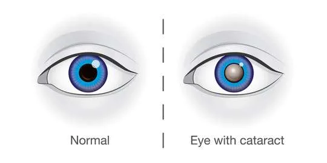
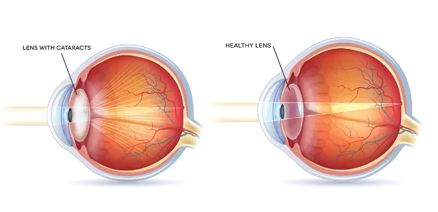
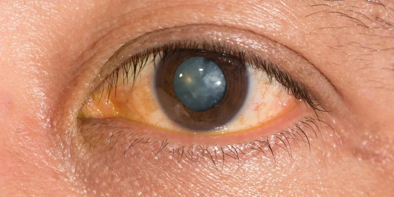
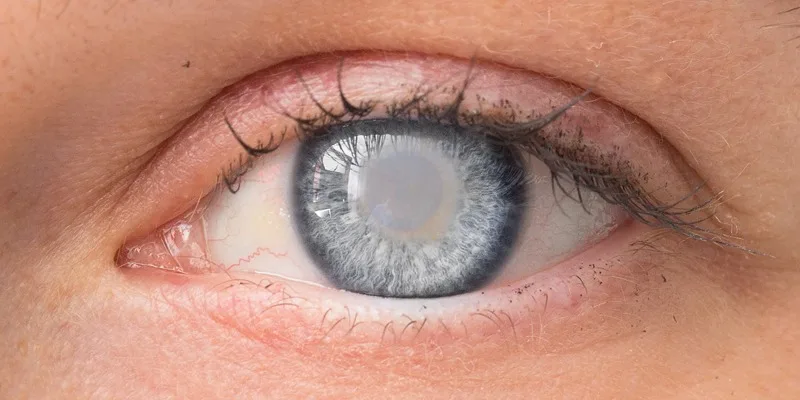
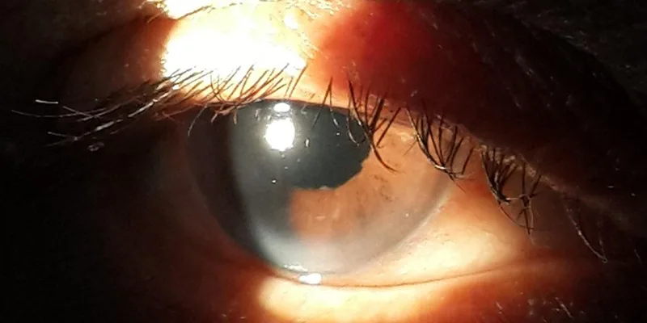
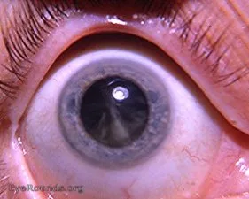
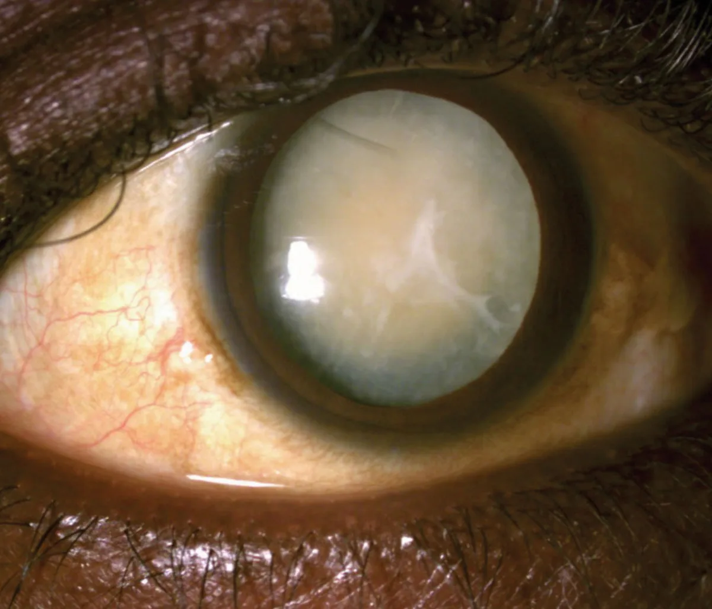
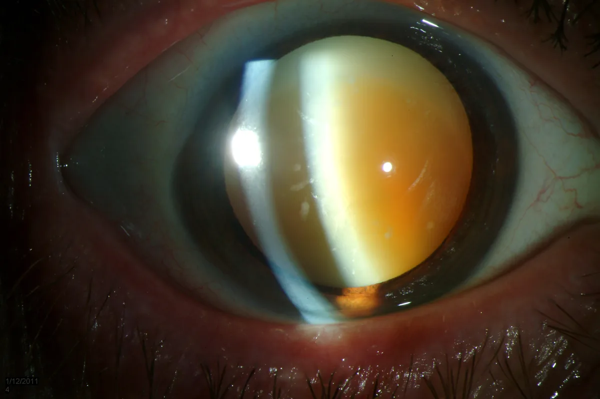

Expanded Nursing Uganda Explanation
Cataract should be understood beyond a short definition. Link the concept to patient history, focused assessment, common risks, nursing priorities, documentation and evaluation of outcomes.
Contents — 17 sections (tap to expand)
01 Cataract
Cataract refers to the clouding or opacity of the eye’s lens, leading to impaired vision. This condition occurs when proteins in the lens clump together, causing light to scatter as it passes through the lens. This prevents a sharply defined image from forming on the retina, resulting in blurred or diminished vision.
Cataracts can develop in one or both eyes but do not spread from one eye to the other. The loss of transparency, or opacity formation is called Cataract .
WHEN EYES WORK PROPERLY
In a healthy eye, light passes through the cornea and pupil, and the lens focuses this light to produce clear, sharp images on the retina. When a cataract forms, the lens becomes cloudy, which disrupts this process. The light becomes scattered, and the image that reaches the retina is blurred. As a cataract progresses, it can severely impact vision, making daily tasks like reading, driving, and recognizing faces difficult.
- Light passes through the cornea and the pupil to the lens.
- The lens focuses light and produces clear, sharp images on the retina.
- As a cataract develops, the lens becomes clouded, which scatters the light and prevents a sharply defined image from reaching the retina. As a result, vision becomes blurred.
- Cataract can occur to one eye or both
02 Risk Factors for Cataracts in Adults
Cataracts are primarily associated with aging, but several other factors can increase the risk:
- Age : The most significant risk factor, with cataracts being prevalent in older adults.
- Sunlight (UV light) Exposure: Prolonged exposure to ultraviolet radiation from the sun can increase the risk.
- Smoking : Tobacco smoke contains harmful chemicals that can damage the lens.
- Diabetes : High blood sugar levels can cause changes in the lens, leading to cataracts.
- Trauma : Both blunt and penetrating injuries to the eye can cause cataracts.
- Family History : A genetic predisposition can increase the likelihood of developing cataracts.
- Corticosteroid Therapy : Long-term use of corticosteroids can contribute to cataract formation.
- Radiation Exposure : Exposure to radiation, including X-rays and other forms of ionizing radiation, can increase the risk.
- Electrical Injury : Electric shocks can cause cataracts due to the energy damaging the lens.
- Myotonic Dystrophy: This genetic disorder can lead to early-onset cataracts.
- Ocular Inflammation (Uveitis) : Chronic inflammation of the uvea can damage the lens and lead to cataract formation.
03 Causes of Cataracts
- Aging : The most common cause, leading to changes in the lens over time.
- Ocular Diseases : Conditions like diabetes mellitus and uveitis can cause cataracts.
- Previous Ocular Surgery : Surgery for conditions like glaucoma can increase the risk of cataracts.
- Systemic Medications: Prolonged use of steroids and phenothiazines can contribute to cataract formation.
- Trauma : Injuries to the eye, including those involving intraocular foreign bodies, can lead to cataracts.
- Ionizing Radiation : Exposure to X-rays and UV rays can damage the lens.
- Congenital Factors : Some infants are born with cataracts due to maternal illnesses like rubella or genetic conditions.
- Inherited Abnormalities : Conditions like myotonic dystrophy, Marfan syndrome, and high myopia can predispose individuals to cataracts.
- Dehydration : Severe dehydration, such as that seen in cholera victims, can increase the risk, as noted in some cases in India.
04 1. Acquired Cataracts
- Age-Related Cataract: The most common type, typically developing after age 40.
- Presenile Cataract : Occurs in individuals younger than the typical age range for cataracts.
- Traumatic Cataract : Results from an injury to the eye.
- Drug-Induced Cataract: Caused by prolonged use of certain medications, such as corticosteroids.
- Secondary Cataract : Develops as a result of other medical conditions like diabetes or ocular inflammation.
05 2. Congenital Cataracts
- Inborn Cataract : Present at birth and often associated with genetic conditions or maternal infections.
06 A. Morphological Classification
Nuclear Cataract : Occurs in the central nucleus of the lens, often leading to a yellowing or browning of the lens. This type can progress slowly over years. Most common.
CORTICAL CATARACT
Cortical Cataract : Occur on the outer edge/layer of the lens (cortex). Begins on the outer edge of the lens, characterized by white, wedge-shaped opacities that spread towards the center. This type often causes issues with glare.
SUBCAPSULAR CATARACT
- Occur just under the capsule of the lens.
- Starts as a small, opaque area.
- It usually forms near the back of the lens, right in the path of light on its way to the retina.
- It’s interferes with reading vision
- Reduces vision in bright light
- Causes glare or halos around lights at night.
POSTERIOR SUBCAPSULAR CATARACTS
- Posterior Subcapsular Cataracts : Begins at the back of the lens (posterior pole) and spreads to the periphery or edges of the lens. It can be developed when: Part of the eye is chronically inflamed or Heavy use of some medications (steroids).
- Affects vision more than other types of cataracts because the light converges at the back of the lens. Dilating drops are useful in this type by keeping the pupils large and thus allow more light into the eye.
IMMATURE CATARACT
- Immature Cataract : The lens is partially opaque, with some areas remaining clear. Vision is still possible but may be significantly impaired.
MATURE CATARACT
- Mature Cataract : The lens is completely opaque, leading to a significant reduction in vision. The lens may appear pearly white.
- Lens appears pearly white
- Mature cataract, with obvious white opacity at the Centre of pupil.
HYPERMATURE CATARACT ( Morgagnian)
Hypermature Cataract (Morgagnian) : The lens cortex becomes liquefied, and the lens nucleus may sink within the capsule. This can lead to a wrinkled anterior capsule and potentially severe complications.
- Intumescent : The proteins in the lens break down and the lens absorbs water and becomes swollen, appearing milky white.
- Liquefactive/Morgagnian Type : Cortex undergoes auto-lytic liquefaction and turns uniformly milky white. The nucleus loses support and settles to the bottom.
CONGENITAL CATARACT
****
07 Congenital Cataract Classification
- Occur in about 3:10000 live births.
- 2/3 of case are bilateral (half of the cause can be identified)
- The most common cause is genetic mutation usually.
- It can cause amblyopia(lazy eye) in infants.
It is divided to:
08 1. Systemic Association
- Metabolic Disorders : Conditions like galactosemia and galactokinase deficiency can cause cataracts in infants.
- Prenatal Infections : Infections like congenital rubella can lead to cataract formation in newborns.
- Chromosomal Abnormalities : Genetic syndromes such as Down syndrome, Patau syndrome, and Edward syndrome are associated with a higher risk of congenital cataracts.
09 2. Non-Systemic Association
- Idiopathic Cases : In some cases, the cause of congenital cataracts is unknown.
10 Clinical Presentation of Cataracts
- Blurred Vision : Gradual loss of clarity, leading to difficulty in seeing fine details.
- Reduced Visual Acuity : Difficulty in seeing both near and distant objects.
- Night Vision Problems : Increased difficulty seeing in low light or at night.
- Glare Sensitivity : Bright lights, such as sunlight or car headlights, may cause discomfort or halos.
- Halos Around Lights : Rings of light may appear around bright sources.
- Double Vision : Seeing two images of a single object, typically in one eye.
- Color Distortion : Colors may appear faded or yellowed.
11 Differential Diagnosis
- Glaucoma : Increased intraocular pressure leading to optic nerve damage.
- Diabetic Retinopathy : Damage to the retinal blood vessels due to diabetes.
- Hypertensive Retinopathy : Retinal damage caused by high blood pressure.
- Age-Related Macular Degeneration : Deterioration of the central part of the retina.
- Retinitis Pigmentosa : A group of genetic disorders causing retinal degeneration.
- Trachoma : A bacterial infection leading to roughening of the inner eyelid.
- Onchocerciasis (River Blindness) : A parasitic infection that can cause blindness.
- Vitamin A Deficiency : Can lead to night blindness and, in severe cases, total blindness.
12 Clinical Findings / Investigations
• The most common objective finding associated with cataracts is decreased visual acuity. • This is measured with an office wall chart or near-vision card.
- VISUAL ACUITY
Acuity refers to the sharpness of vision or how clearly you see an object. • In this test, the doctor checks to see how well you read letters from across the room • Eyes are tested one at a time, while the other eye is covered. • Using the chart with progressively smaller letters from top to bottom, to determine the level of vision.
2. SLIT LAMP EXAM (SLE)
• SLE allows the ophthalmologist to see the structures of the eye under magnification. • The microscope is called a slit lamp because it uses an intense slit of light to illuminate your cornea, iris, and lens. • These structures are viewed in small sections to detect any small abnormalities.
3. DILATED EXAM
• Dilating drops are placed in the eyes to dilate the pupils wide and provide a better view to the back of the eyes. • It allows the ophthalmologist to examine the lens for signs of a cataract and, if needed, determine how dense the clouding is. • It also allows for examination of the retina and the optic nerve. • Dilating drops usually keep your pupils open for a few hours before their effect gradually wears off.
4. REFRACTION
• This is performed by your doctor to see if the decrease in vision is simply due for need for new glasses, or if there is another process at work that accounts for the decrease in visual acuity.
Treatment/Management of Cataracts
1. Non-Surgical Management .
- Glasses : Cataracts alter the refractive power of the natural lens, so glasses can help maintain good vision.
- Make sure that eyeglasses or contact lenses are the most accurate prescription possible.
- Patient Advice:
- Lighting : Improve home lighting with more or brighter lamps.
- Sunglasses : Wear sunglasses outdoors to reduce glare.
- Night Driving : Limit night driving.
2. Surgical Management .
Indications:
- Changes in eyeglasses no longer improve vision.
- Quality of life is significantly impacted.
- Cataract removal is likely to improve vision (when visual acuity cannot be improved with glasses).
Surgical Techniques :
Phacoemulsification :
- Procedure: A tiny, hollowed tip uses high-frequency (ultrasonic) vibrations to break up the cloudy lens (cataract). The same tip is used to suction out the lens.
- Advantages : Minimally invasive, precise, and generally results in faster recovery.
Extracapsular Cataract Extraction (ECCE) :
- Procedure : The nucleus and cortex are removed from the capsule, leaving behind the intact posterior capsule, peripheral anterior capsule, and zonules.
- Advantages : Preserves the capsular bag, reducing the risk of complications like vitreous prolapse.
Intracapsular Cataract Extraction :
- Procedure : The entire lens (nucleus, cortex, and capsule) is removed as a single piece after breaking the zonules.
- Advantages : Eliminates the risk of posterior capsular opacification (after-cataract).
- Disadvantages : Increased risk of complications like vitreous prolapse and retinal detachment.
3. Pre-Operative Assessment :
- General Health Evaluation :
- Blood pressure check.
- Assessment of patient’s ability to cooperate with the procedure and lie flat during surgery.
- Eye Drop Instillation Instruction : Teach patients how to instill eye drops correctly.
- Reassurance and Consenting : Provide reassurance and obtain informed consent.
- Intraocular Pressure : Ensure normal intraocular pressure or adequate control of pre-existing glaucoma.
4. Post-Operative Care :
- Discharge : Patients are usually discharged home the same day.
- Follow-Up : Patients are seen in the office the next day, the following week, and then again after a month to monitor healing progress.
- Patient Advice : Discomfort : Mild discomfort is normal for a couple of days after surgery.
- Eye Patch/Shield: Wear an eye patch or protective shield the day of surgery.
- Exertion : Avoid strenuous exertion to prevent increased pressure in the eyeball.
- Trauma : Avoid ocular trauma.
- Medications : The doctor may prescribe medications to prevent infection and control eye pressure: Steroid drops : To reduce inflammation.
- Antibiotic drops : To prevent infection.
Complications of Cataract Surgery
- Infective Endophthalmitis : A rare but severe infection that can lead to vision loss.
- Suprachoroidal Hemorrhage : Severe intraoperative bleeding that can cause permanent vision loss.
- Uveitis : Inflammation of the uvea, more common in patients with diabetes or a history of ocular inflammation.
- Ocular Perforation : A rare but serious complication.
- Refractive Error : Incorrect intraocular lens power can lead to residual vision problems.
- Posterior Capsular Rupture and Vitreous Loss: Can increase the risk of retinal detachment.
13 Nursing Care Plan for Cataracts
- Assessment Nursing Diagnosis Goals/Expected Outcomes Interventions Rationale Evaluation
- Patient reports blurred vision, difficulty seeing at night, and sensitivity to glare Disturbed Sensory Perception related to cataract formation as evidenced by blurred vision, difficulty seeing at night, and sensitivity to glare To improve visual acuity and reduce sensory disturbances within 2 weeks – Assess visual acuity using a Snellen chart or other appropriate tools – Educate the patient about cataract symptoms and the impact on vision – Advise on environmental modifications, such as using brighter lights and reducing glare – Encourage the patient to use magnifying aids or reading glasses as needed – Regular assessment of visual acuity helps in monitoring the progression of cataracts – Patient education empowers the patient with knowledge about their condition – Environmental modifications can help manage symptoms and improve quality of life – Magnifying aids can assist in daily activities and reading – Patient reports improved ability to see clearly and manage symptoms with environmental modifications
- Patient expresses concern about vision loss and the need for surgery Anxiety related to vision loss and surgical intervention as evidenced by patient expressing concern and fear about the procedure To reduce anxiety and improve the patient’s understanding of the treatment plan within 1 week – Provide information about cataract surgery, including the procedure, risks, and benefits – Reassure the patient that cataract surgery is a common and effective treatment – Discuss postoperative care and recovery expectations – Offer emotional support and address any specific concerns or fears – Providing information helps alleviate fear and confusion about the surgery – Reassurance and education can reduce anxiety and increase patient comfort – Understanding postoperative care and recovery helps prepare the patient for the process – Emotional support fosters a positive therapeutic relationship – Patient reports feeling less anxious and demonstrates understanding of the surgical procedure and recovery process
- Assessment of preoperative and postoperative visual acuity and any changes Ineffective Health Maintenance related to inadequate knowledge of postoperative care as evidenced by patient’s lack of understanding of care instructions To ensure proper adherence to postoperative care and monitor visual changes within 1 week – Provide detailed instructions on postoperative care, including eye drop administration, avoiding eye strain, and recognizing signs of complications – Schedule follow-up appointments to monitor recovery and visual acuity – Educate the patient on signs of infection or complications, such as increased redness, pain, or vision changes – Review the importance of attending follow-up appointments and adhering to care instructions – Detailed instructions help prevent complications and promote proper healing – Follow-up appointments are crucial for monitoring progress and addressing any issues – Early recognition of complications can prevent further problems and improve outcomes – Adherence to care instructions ensures optimal recovery and visual improvement – Patient demonstrates proper postoperative care practices and reports no signs of complications – Visual acuity improves as expected and follow-up appointments are attended
- Patient reports difficulty performing daily activities and decreased quality of life due to vision changes Impaired Functional Ability related to decreased visual acuity as evidenced by difficulty performing daily activities and decreased quality of life To enhance functional ability and quality of life through improved visual acuity within 4 weeks – Assess the impact of visual changes on daily activities and quality of life – Collaborate with an occupational therapist to address functional limitations and recommend adaptive strategies – Provide resources for low vision aids and support services – Encourage the patient to engage in activities they enjoy to improve overall well-being – Assessment of impact helps tailor interventions to the patient’s specific needs – Occupational therapy can provide strategies and tools to improve daily functioning – Resources for low vision aids and support services can enhance independence and quality of life – Encouraging engagement in enjoyable activities supports emotional and psychological well-being – Patient reports improved ability to perform daily activities and an enhanced quality of life
- Patient has difficulty understanding and following medication regimens and postoperative care Knowledge Deficit related to unfamiliarity with postoperative medication and care instructions as evidenced by patient’s questions and confusion To improve patient understanding and adherence to the medication and care regimen within 1 week – Provide clear, written instructions on medication administration and postoperative care – Demonstrate the proper technique for administering eye drops and caring for the eye – Use teach-back methods to confirm understanding and clarify any questions – Schedule a follow-up call or visit to review instructions and address any issues – Written instructions reinforce verbal teaching and provide a reference for the patient – Demonstration ensures proper technique and reinforces learning – Teach-back methods confirm understanding and allow for clarification of doubts – Follow-up calls or visits provide additional support and address any remaining concerns – Patient demonstrates correct medication administration and adherence to postoperative care instructions
14 Nursing Uganda Clinical Lens
Use Cataract as a practical nursing topic, not only a memorized definition. Study medicines through indication, safety checks, expected response, adverse effects and patient teaching.
- What to understand first: define cataract, identify the normal or expected pattern, then explain what changes when the patient is unwell.
- Why it matters in care: the nurse must recognize risk early, explain findings clearly, document accurately and know when to escalate.
- How to revise it: connect each point to assessment, nursing diagnosis or care problem, intervention, rationale and evaluation.
15 Assessment Guide
- Diagnosis or reason for the medicine, allergies, pregnancy status and previous reactions.
- Current medicines, herbal products, renal or liver risk and baseline observations.
- Dose, route, timing, dilution, expiry date and documentation requirements.
16 Nursing Priorities, Rationales and Outcomes
- Apply the rights of medication administration and facility policy.
- Monitor therapeutic response and class-specific adverse effects.
- Educate the patient on purpose, timing, missed doses, warning symptoms and adherence.
The rationale for these priorities is patient safety: nursing actions should prevent deterioration, reduce discomfort, support recovery and create clear evidence for the next caregiver.
- Expected outcome: The medicine produces the intended effect without preventable harm, and administration is accurately documented.
17 Patient Teaching and Revision Check
- Explain cataract in simple language the patient or caregiver can repeat back.
- Teach warning signs, medicine or follow-up instructions, hygiene or lifestyle points where relevant.
- For exams, prepare a short answer using: definition, causes or risk factors, signs, assessment, management, complications and prevention.
- For ward practice, document baseline findings, actions taken, patient response and the plan for review.
Illustrations and Diagrams (15)








7 more diagrams available — open the lesson for full illustrations.
Related Video Lectures
Watch nursing lecture videos on YouTube for this topic. Opens in a new tab.
Watch on YouTubeExternal link: YouTube may use its own cookies and terms. Nursing Uganda is not affiliated with YouTube.